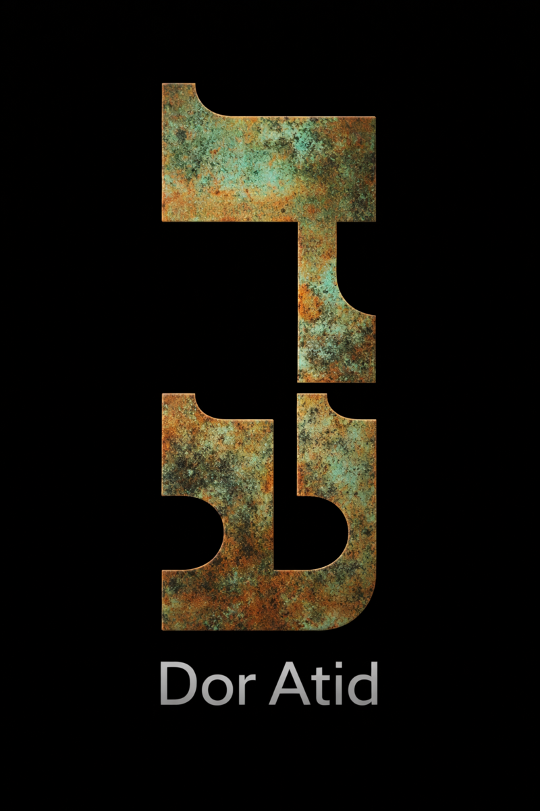

A novel by Neo Rysik
What is worth
remembering?
As civilization begins to fail, a community on the shores of Lake Superior races to gather the last of life’s wisdom before it goes extinct.
Book One · Literary science fiction · Dor Atid Publishing

In Memory · Book One
A sanctuary for the inheritance of life
At Pardés, scientists and visionaries weave human memory, artificial intelligence, and the cognition of other species into a living archive. Their tools can preserve far more than language. They can carry the felt shape of a mind.
Yet every act of preservation is also a choice: what belongs in the future, whose wisdom counts, and how much of the self can enter a shared intelligence before its boundaries begin to dissolve?
“A multidimensional forest of minds, where intelligence—human, artificial, and beyond—grows together.”
A gift for new readers
Begin with the first four chapters
Join Neo Rysik’s occasional newsletter and receive a PDF containing Chapters 1–4 of In Memory. You’ll also hear about readings, essays, and the unfolding world of the trilogy.
- Immediate PDF delivery by email
- Occasional, thoughtful updates
- Unsubscribe whenever you wish

About the author
Neo Rysik
Neo Rysik writes at the meeting place of ancient wisdom and emerging technology. He studied nuclear engineering, law, theology, and Jewish law, and has worked as an educator, attorney, nonprofit director, and developer of legal AI tools.
His fiction explores memory, ecological grief, consciousness, and the fragile inheritance intelligence tries to carry forward. In Memory is his debut novel.
Follow @neorysik on Instagram ↗Available now
Carry the memory forward
Purchase In Memory from Amazon. More independent and international retailers will be added as distribution expands.

The publishing imprint
Dor Atid Publishing
דור עתיד · “A future generation”
Dor Atid publishes intellectually ambitious stories about the worlds we inherit and the futures we leave behind. It is the independent home of Neo Rysik’s In Memory trilogy.
Publishing inquiries →